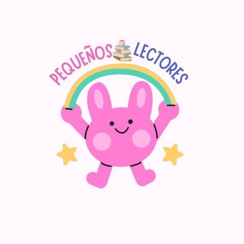
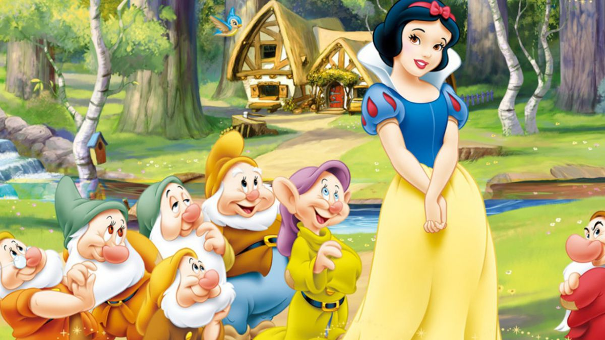
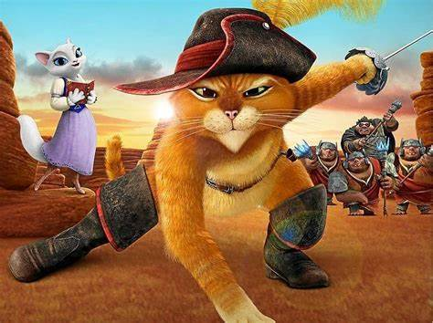

Pequeños lectores
Nuestro proyecto busca inspirar a los niños a descubrir el amor por la lectura a través de cuentos interactivos y actividades lúdicas. Creemos que leer no solo alimenta la imaginación, sino que también fortalece habilidades esenciales para su desarrollo. ¡Acompáñanos en este viaje por el mundo de las letras y ayúdanos a formar futuros lectores!
Sobre nosotros
El objetivo de nuestro proyecto es hacer que los niños disfruten de la lectura de una forma divertida y dinámica. Queremos que los cuentos se conviertan en una puerta a mundos llenos de imaginación, ayudándolos a desarrollar sus habilidades mientras se divierten. ¡La idea es que leer sea algo que esperen con ganas y no solo una tarea más!
.jpeg)
Victoria Moron Acuña
.jpeg)
Eduardo Fabricio Pulido Cisneros
.jpeg)
Yeray Manuel Serrano Alonso
.jpeg)
Diego Serrano Gómez
.jpeg)
Ana Paulina López Pérez
Recursos
Estos son los libros que leímos.
Placeholder Blancanieves
Una princesa huye de su malvada madrastra y encuentra refugio con siete enanitos.
1
Placeholder El gato con botas
Un ingenioso gato ayuda a su amo pobre a alcanzar la riqueza y el poder.
2
.jpeg)
Una joven maltratada por su madrastra encuentra el amor con un príncipe gracias a la magia de su hada madrina.
3
Evidencias
.jpeg)


.jpeg)
.jpeg)
.jpeg)


.jpeg)